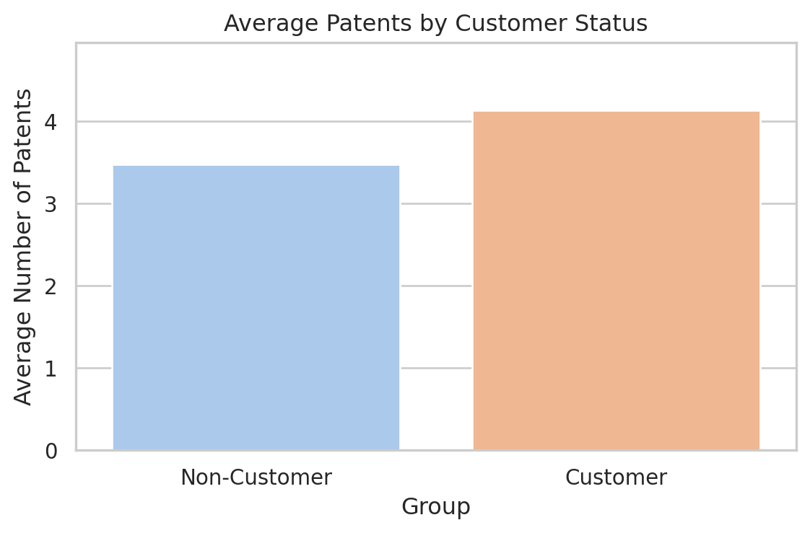
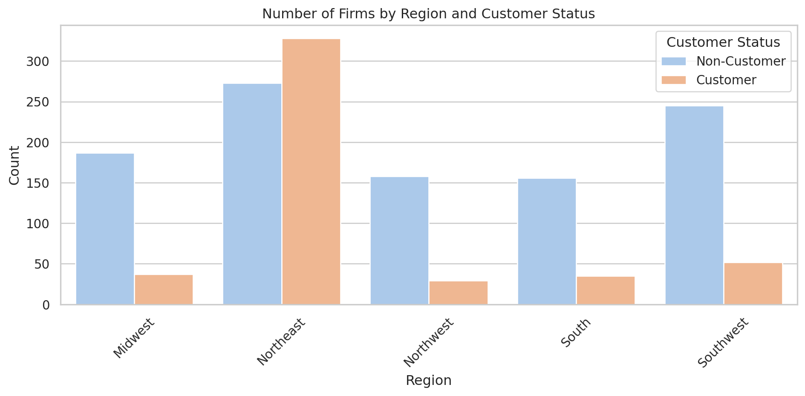
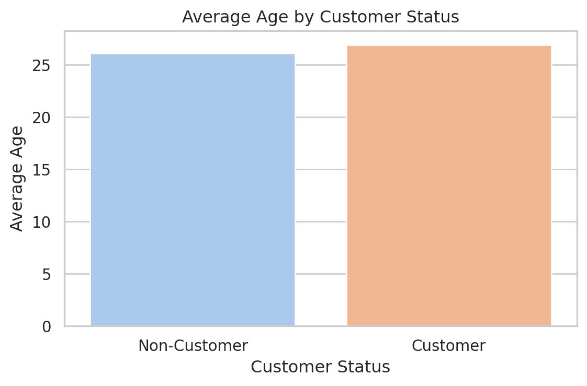
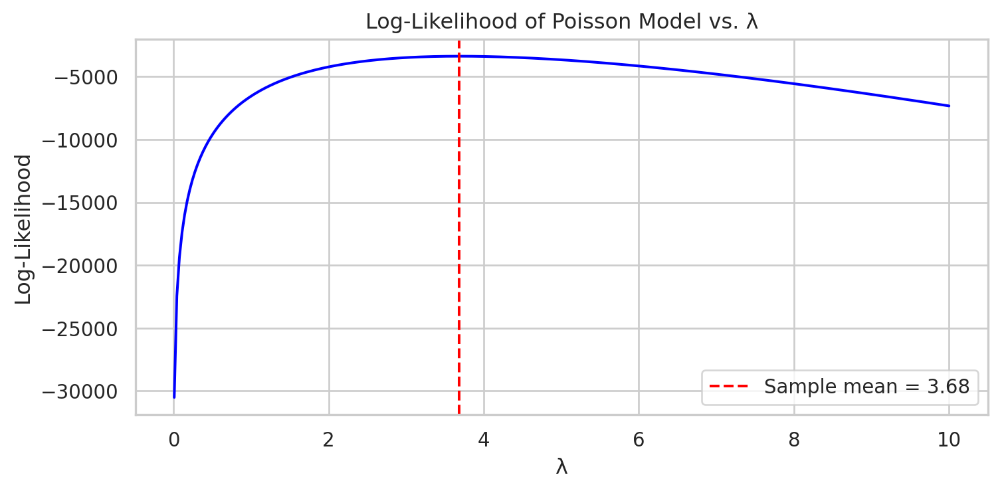

import pandas as pd
import pyrsm as rsm
blueprinty = pd.read_csv('blueprinty.csv')
blueprinty.head(5)| patents | region | age | iscustomer | |
|---|---|---|---|---|
| 0 | 0 | Midwest | 32.5 | 0 |
| 1 | 3 | Southwest | 37.5 | 0 |
| 2 | 4 | Northwest | 27.0 | 1 |
| 3 | 3 | Northeast | 24.5 | 0 |
| 4 | 3 | Southwest | 37.0 | 0 |
Yichen Wu
May 3, 2025
Blueprinty is a small firm that makes software for developing blueprints specifically for submitting patent applications to the US patent office. Their marketing team would like to make the claim that patent applicants using Blueprinty’s software are more successful in getting their patent applications approved. Ideal data to study such an effect might include the success rate of patent applications before using Blueprinty’s software and after using it. Unfortunately, such data is not available.
However, Blueprinty has collected data on 1,500 mature (non-startup) engineering firms. The data include each firm’s number of patents awarded over the last 5 years, regional location, age since incorporation, and whether or not the firm uses Blueprinty’s software. The marketing team would like to use this data to make the claim that firms using Blueprinty’s software are more successful in getting their patent applications approved.
import pandas as pd
import pyrsm as rsm
blueprinty = pd.read_csv('blueprinty.csv')
blueprinty.head(5)| patents | region | age | iscustomer | |
|---|---|---|---|---|
| 0 | 0 | Midwest | 32.5 | 0 |
| 1 | 3 | Southwest | 37.5 | 0 |
| 2 | 4 | Northwest | 27.0 | 1 |
| 3 | 3 | Northeast | 24.5 | 0 |
| 4 | 3 | Southwest | 37.0 | 0 |
import matplotlib.pyplot as plt
import seaborn as sns
mean_patents = blueprinty.groupby("iscustomer")["patents"].mean().reset_index()
mean_patents["Group"] = mean_patents["iscustomer"].map({0: "Non-Customer", 1: "Customer"})
sns.set(style="whitegrid")
plt.figure(figsize=(6, 4))
sns.barplot(data=mean_patents, x="Group", y="patents", palette="pastel")
plt.ylabel("Average Number of Patents")
plt.title("Average Patents by Customer Status")
plt.ylim(0, mean_patents["patents"].max() * 1.2)
plt.tight_layout()
plt.show()/tmp/ipykernel_19527/3159558304.py:9: FutureWarning:
Passing `palette` without assigning `hue` is deprecated and will be removed in v0.14.0. Assign the `x` variable to `hue` and set `legend=False` for the same effect.

The bar chart compares the average number of patents between customers and non-customers. We observe that customers of blueprinty have a higher average number of patents.
Blueprinty customers are not selected at random. It may be important to account for systematic differences in the age and regional location of customers vs non-customers.
region_counts = blueprinty.groupby(["region", "iscustomer"]).size().reset_index(name="count")
region_counts["Customer Status"] = region_counts["iscustomer"].map({0: "Non-Customer", 1: "Customer"})
plt.figure(figsize=(10, 5))
sns.barplot(data=region_counts, x="region", y="count", hue="Customer Status", palette="pastel")
plt.title("Number of Firms by Region and Customer Status")
plt.xlabel("Region")
plt.ylabel("Count")
plt.legend(title="Customer Status")
plt.xticks(rotation=45)
plt.tight_layout()
plt.show()
The distribution of firms by region and customer status reveals a clear pattern: customer firms are highly concentrated in the Northeast, whereas other regions such as the Midwest, South, and Southwest are dominated by non-customer firms. This suggests that customers may be geographically concentrated, possibly reflecting regional hubs for innovation or stronger commercial ties in the Northeast.
mean_ages = blueprinty.groupby("iscustomer")["age"].mean().reset_index()
mean_ages["Customer Status"] = mean_ages["iscustomer"].map({0: "Non-Customer", 1: "Customer"})
plt.figure(figsize=(6, 4))
sns.barplot(data=mean_ages, x="Customer Status", y="age", palette="pastel")
plt.ylabel("Average Age")
plt.title("Average Age by Customer Status")
plt.tight_layout()
plt.show()/tmp/ipykernel_19527/3299340969.py:5: FutureWarning:
Passing `palette` without assigning `hue` is deprecated and will be removed in v0.14.0. Assign the `x` variable to `hue` and set `legend=False` for the same effect.

The chart illustrates that customer firms are, on average, slightly older than non-customer firms. While the difference is modest, it suggests that firms who become customers may tend to be more established or mature.
Since our outcome variable of interest can only be small integer values per a set unit of time, we can use a Poisson density to model the number of patents awarded to each engineering firm over the last 5 years. We start by estimating a simple Poisson model via Maximum Likelihood.
Assume we observe data \(Y_1, Y_2, ..., Y_n\) independently from a Poisson distribution:
\[ P(Y_i = y_i) = \frac{e^{-\lambda} \lambda^{y_i}}{y_i!} \]
The likelihood function is:
\[ \mathcal{L}(\lambda) = \prod_{i=1}^{n} \frac{e^{-\lambda} \lambda^{y_i}}{y_i!} \]
Y = blueprinty["patents"].dropna().values
lambdas = np.linspace(0.01, 10, 300)
logliks = [log_likelihood_poisson(lmbda, Y) for lmbda in lambdas]
plt.figure(figsize=(8, 4))
plt.plot(lambdas, logliks, color="blue")
plt.axvline(np.mean(Y), color="red", linestyle="--", label=f"Sample mean = {np.mean(Y):.2f}")
plt.title("Log-Likelihood of Poisson Model vs. λ")
plt.xlabel("λ")
plt.ylabel("Log-Likelihood")
plt.legend()
plt.grid(True)
plt.tight_layout()
plt.show()
To estimate \(\lambda\) in the Poisson model, we begin by writing the log-likelihood function:
\[ \ell(\lambda) = -n\lambda + \left( \sum_{i=1}^{n} y_i \right) \log \lambda - \sum_{i=1}^{n} \log y_i! \]
Taking the derivative with respect to \(\lambda\):
\[ \frac{d\ell}{d\lambda} = -n + \frac{\sum y_i}{\lambda} \]
Setting the derivative equal to zero:
\[ -n + \frac{\sum y_i}{\lambda} = 0 \Rightarrow \hat{\lambda} = \frac{1}{n} \sum y_i \]
Thus, the MLE of \(\lambda\) is the sample mean.
initial_guess = [1.0]
def neg_log_likelihood_poisson(lmbda, y):
if lmbda <= 0:
return -np.inf
n = len(y)
return -(-n * lmbda + np.sum(y) * np.log(lmbda) - np.sum(gammaln(y + 1)))
result = minimize(neg_log_likelihood_poisson, x0=initial_guess, args=(Y,), bounds=[(1e-6, None)])
lambda_mle = result.x[0]
print(f"MLE for λ: {lambda_mle:.4f}")
print(f"Sample mean: {np.mean(Y):.4f}")MLE for λ: 3.6847
Sample mean: 3.6847Next, we extend our simple Poisson model to a Poisson Regression Model such that \(Y_i = \text{Poisson}(\lambda_i)\) where \(\lambda_i = \exp(X_i'\beta)\). The interpretation is that the success rate of patent awards is not constant across all firms (\(\lambda\)) but rather is a function of firm characteristics \(X_i\). Specifically, we will use the covariates age, age squared, region, and whether the firm is a customer of Blueprinty.
todo: Update your likelihood or log-likelihood function with an additional argument to take in a covariate matrix X. Also change the parameter of the model from lambda to the beta vector. In this model, lambda must be a positive number, so we choose the inverse link function g_inv() to be exp() so that \(\lambda_i = e^{X_i'\beta}\). For example:
from scipy.optimize import minimize
import numpy as np
import pandas as pd
from scipy.special import gammaln
def neg_poisson_regression_likelihood(beta, X, y):
eta = np.dot(X, beta)
eta = np.clip(eta, -20, 20)
lambdas = np.exp(eta)
loglik = -np.sum(lambdas) + np.dot(y, eta) - np.sum(gammaln(y + 1))
return -loglik
blueprinty["age_squared"] = blueprinty["age"] ** 2
from sklearn.preprocessing import StandardScaler
numeric_cols = ["age", "age_squared", "iscustomer"]
scaler = StandardScaler()
blueprinty[numeric_cols] = scaler.fit_transform(blueprinty[numeric_cols])
region_dummies = pd.get_dummies(blueprinty["region"], drop_first=True)
X = pd.concat([
pd.Series(1.0, index=blueprinty.index, name="Intercept"),
blueprinty[["age", "age_squared"]],
region_dummies,
blueprinty[["iscustomer"]]
], axis=1)
X_names = X.columns.tolist()
X = X.astype(float).values
y = blueprinty["patents"].astype(float).values
init_beta = np.zeros(X.shape[1])
result = minimize(neg_poisson_regression_likelihood, x0=init_beta, args=(X,y), method="L-BFGS-B")
beta_hat = result.x
hessian_inv_mat = result.hess_inv.todense()
standard_errors = np.sqrt(np.diag(hessian_inv_mat))
coef_table = pd.DataFrame({
"Coefficient": beta_hat,
"Std. Error": standard_errors
}, index=X_names)
print(coef_table.round(4)) Coefficient Std. Error
Intercept 1.2555 0.4256
age 1.0761 3.2764
age_squared -1.1816 3.3572
Northeast 0.0292 0.5956
Northwest -0.0176 0.7796
South 0.0565 0.7548
Southwest 0.0506 1.0325
iscustomer 0.0969 0.2682import statsmodels.api as sm
import statsmodels.formula.api as smf
model_std = smf.glm(
"patents ~ age + age_squared + C(region) + iscustomer",
data=blueprinty,
family=sm.families.Poisson()
).fit()
print(model_std.summary()) Generalized Linear Model Regression Results
==============================================================================
Dep. Variable: patents No. Observations: 1500
Model: GLM Df Residuals: 1492
Model Family: Poisson Df Model: 7
Link Function: Log Scale: 1.0000
Method: IRLS Log-Likelihood: -3258.1
Date: Mon, 19 May 2025 Deviance: 2143.3
Time: 22:28:06 Pearson chi2: 2.07e+03
No. Iterations: 5 Pseudo R-squ. (CS): 0.1360
Covariance Type: nonrobust
==========================================================================================
coef std err z P>|z| [0.025 0.975]
------------------------------------------------------------------------------------------
Intercept 1.2555 0.036 34.402 0.000 1.184 1.327
C(region)[T.Northeast] 0.0292 0.044 0.669 0.504 -0.056 0.115
C(region)[T.Northwest] -0.0176 0.054 -0.327 0.744 -0.123 0.088
C(region)[T.South] 0.0566 0.053 1.074 0.283 -0.047 0.160
C(region)[T.Southwest] 0.0506 0.047 1.072 0.284 -0.042 0.143
age 1.0760 0.100 10.716 0.000 0.879 1.273
age_squared -1.1815 0.103 -11.513 0.000 -1.383 -0.980
iscustomer 0.0969 0.014 6.719 0.000 0.069 0.125
==========================================================================================We fit a Poisson regression model to estimate the number of patents awarded to firms based on age, customer status, and region.
The coefficient on age is significantly positive, while age squared is significantly negative, suggesting a non-linear (inverted-U) relationship between firm age and patenting activity. Firms that are customers of Blueprinty also tend to have significantly more patents.
Regional differences, however, do not appear to be statistically significant, indicating that patent activity is not strongly driven by firm location.
import statsmodels.api as sm
import statsmodels.formula.api as smf
import pandas as pd
model = smf.glm(
"patents ~ age + age_squared + C(region) + iscustomer",
data=blueprinty,
family=sm.families.Poisson()
).fit()
X_0 = blueprinty.copy()
X_1 = blueprinty.copy()
X_0["iscustomer"] = 0
X_1["iscustomer"] = 1
y_pred_0 = model.predict(X_0)
y_pred_1 = model.predict(X_1)
diff = y_pred_1 - y_pred_0
avg_effect = diff.mean()
print(f"Average effect of being a customer: {avg_effect:.4f}")Average effect of being a customer: 0.3737To evaluate the effect of Blueprinty’s software on patenting success, we simulated predicted patent counts under two scenarios: assuming each firm is not a customer, and assuming it is a customer. Holding all other variables constant, we find that becoming a Blueprinty customer increases the expected number of patents by approximately 0.37 on average.
This suggests that Blueprinty’s product has a meaningful and positive association with innovation outcomes across firms.
AirBnB is a popular platform for booking short-term rentals. In March 2017, students Annika Awad, Evan Lebo, and Anna Linden scraped of 40,000 Airbnb listings from New York City. The data include the following variables:
- `id` = unique ID number for each unit
- `last_scraped` = date when information scraped
- `host_since` = date when host first listed the unit on Airbnb
- `days` = `last_scraped` - `host_since` = number of days the unit has been listed
- `room_type` = Entire home/apt., Private room, or Shared room
- `bathrooms` = number of bathrooms
- `bedrooms` = number of bedrooms
- `price` = price per night (dollars)
- `number_of_reviews` = number of reviews for the unit on Airbnb
- `review_scores_cleanliness` = a cleanliness score from reviews (1-10)
- `review_scores_location` = a "quality of location" score from reviews (1-10)
- `review_scores_value` = a "quality of value" score from reviews (1-10)
- `instant_bookable` = "t" if instantly bookable, "f" if nottodo: Assume the number of reviews is a good proxy for the number of bookings. Perform some exploratory data analysis to get a feel for the data, handle or drop observations with missing values on relevant variables, build one or more models (e.g., a poisson regression model for the number of bookings as proxied by the number of reviews), and interpret model coefficients to describe variation in the number of reviews as a function of the variables provided.
| Unnamed: 0 | id | days | last_scraped | host_since | room_type | bathrooms | bedrooms | price | number_of_reviews | review_scores_cleanliness | review_scores_location | review_scores_value | instant_bookable | |
|---|---|---|---|---|---|---|---|---|---|---|---|---|---|---|
| 0 | 1 | 2515 | 3130 | 4/2/2017 | 9/6/2008 | Private room | 1.0 | 1.0 | 59 | 150 | 9.0 | 9.0 | 9.0 | f |
| 1 | 2 | 2595 | 3127 | 4/2/2017 | 9/9/2008 | Entire home/apt | 1.0 | 0.0 | 230 | 20 | 9.0 | 10.0 | 9.0 | f |
| 2 | 3 | 3647 | 3050 | 4/2/2017 | 11/25/2008 | Private room | 1.0 | 1.0 | 150 | 0 | NaN | NaN | NaN | f |
| 3 | 4 | 3831 | 3038 | 4/2/2017 | 12/7/2008 | Entire home/apt | 1.0 | 1.0 | 89 | 116 | 9.0 | 9.0 | 9.0 | f |
| 4 | 5 | 4611 | 3012 | 4/2/2017 | 1/2/2009 | Private room | NaN | 1.0 | 39 | 93 | 9.0 | 8.0 | 9.0 | t |
Unnamed: 0 id days bathrooms bedrooms price \
count 40628.00 40628.00 40628.00 40468.00 40552.00 40628.00
mean 20314.50 9698889.00 1102.37 1.12 1.15 144.76
std 11728.44 5460166.00 1383.27 0.39 0.69 210.66
min 1.00 2515.00 1.00 0.00 0.00 10.00
25% 10157.75 4889868.25 542.00 1.00 1.00 70.00
50% 20314.50 9862877.50 996.00 1.00 1.00 100.00
75% 30471.25 14667893.75 1535.00 1.00 1.00 170.00
max 40628.00 18009669.00 42828.00 8.00 10.00 10000.00
number_of_reviews review_scores_cleanliness review_scores_location \
count 40628.00 30433.00 30374.00
mean 15.90 9.20 9.41
std 29.25 1.12 0.84
min 0.00 2.00 2.00
25% 1.00 9.00 9.00
50% 4.00 10.00 10.00
75% 17.00 10.00 10.00
max 421.00 10.00 10.00
review_scores_value
count 30372.00
mean 9.33
std 0.90
min 2.00
25% 9.00
50% 10.00
75% 10.00
max 10.00
<class 'pandas.core.frame.DataFrame'>
RangeIndex: 40628 entries, 0 to 40627
Data columns (total 14 columns):
# Column Non-Null Count Dtype
--- ------ -------------- -----
0 Unnamed: 0 40628 non-null int64
1 id 40628 non-null int64
2 days 40628 non-null int64
3 last_scraped 40628 non-null object
4 host_since 40593 non-null object
5 room_type 40628 non-null object
6 bathrooms 40468 non-null float64
7 bedrooms 40552 non-null float64
8 price 40628 non-null int64
9 number_of_reviews 40628 non-null int64
10 review_scores_cleanliness 30433 non-null float64
11 review_scores_location 30374 non-null float64
12 review_scores_value 30372 non-null float64
13 instant_bookable 40628 non-null object
dtypes: float64(5), int64(5), object(4)
memory usage: 4.3+ MB
Nonedf = df.drop(columns=["Unnamed: 0", "id"])
df["last_scraped"] = pd.to_datetime(df["last_scraped"], errors="coerce")
df["host_since"] = pd.to_datetime(df["host_since"], errors="coerce")
df["host_duration"] = (df["last_scraped"] - df["host_since"]).dt.days
df["instant_bookable"] = df["instant_bookable"].map({"t": 1, "f": 0})
model_vars = [
"number_of_reviews", "price", "room_type", "bathrooms", "bedrooms",
"review_scores_cleanliness", "review_scores_location", "review_scores_value",
"instant_bookable", "host_duration"
]
df_model = df[model_vars].dropna()
formula = """
number_of_reviews ~ price + C(room_type) + bathrooms + bedrooms +
review_scores_cleanliness + review_scores_location + review_scores_value +
instant_bookable + host_duration
"""
poisson_model = smf.glm(
formula=formula,
data=df_model,
family=sm.families.Poisson()
).fit()
print(poisson_model.summary()) Generalized Linear Model Regression Results
==============================================================================
Dep. Variable: number_of_reviews No. Observations: 30140
Model: GLM Df Residuals: 30129
Model Family: Poisson Df Model: 10
Link Function: Log Scale: 1.0000
Method: IRLS Log-Likelihood: -4.9041e+05
Date: Mon, 19 May 2025 Deviance: 8.5945e+05
Time: 22:28:07 Pearson chi2: 1.18e+06
No. Iterations: 6 Pseudo R-squ. (CS): 0.9655
Covariance Type: nonrobust
================================================================================================
coef std err z P>|z| [0.025 0.975]
------------------------------------------------------------------------------------------------
Intercept 2.9427 0.017 176.920 0.000 2.910 2.975
C(room_type)[T.Private room] 0.0192 0.003 7.025 0.000 0.014 0.025
C(room_type)[T.Shared room] -0.1152 0.009 -13.318 0.000 -0.132 -0.098
price -4.302e-05 8.27e-06 -5.199 0.000 -5.92e-05 -2.68e-05
bathrooms -0.1134 0.004 -30.067 0.000 -0.121 -0.106
bedrooms 0.0757 0.002 37.214 0.000 0.072 0.080
review_scores_cleanliness 0.1110 0.002 73.159 0.000 0.108 0.114
review_scores_location -0.0815 0.002 -50.403 0.000 -0.085 -0.078
review_scores_value -0.0911 0.002 -49.311 0.000 -0.095 -0.087
instant_bookable 0.4591 0.003 157.293 0.000 0.453 0.465
host_duration 0.0005 1.86e-06 280.430 0.000 0.001 0.001
================================================================================================The Poisson regression model reveals several significant relationships between listing characteristics and the number of reviews, which serves as a proxy for bookings. Among the most influential factors, instant bookable listings are associated with approximately 58% more reviews than those that are not, indicating the convenience of instant booking likely drives higher customer engagement. Additionally, host duration (the length of time a host has been active) shows a positive effect, where each additional day is linked to a small but consistent 0.05% increase in reviews, reflecting the importance of host experience over time.
Cleanliness ratings play a strong role as well: for every one-point increase in review_scores_cleanliness, the expected number of reviews rises by 12%, underscoring how perceived cleanliness boosts customer trust and demand. Listings with more bedrooms also see more reviews, with each additional bedroom linked to an 8% increase. In contrast, more bathrooms are surprisingly associated with fewer reviews, which could reflect specific property types or customer expectations.
Price has a modest negative relationship with reviews: for every $100 increase in nightly rate, the number of reviews is expected to decline by about 4%, consistent with the idea that higher prices may limit the booking volume. Interestingly, review_scores_location and review_scores_value both show negative associations with review count, suggesting that highly rated properties in these areas may rely less on volume and more on perceived quality or exclusivity.
Overall, the results suggest that ease of booking, host tenure, cleanliness, and property configuration are key drivers of booking volume, while price sensitivity and certain customer ratings reflect more nuanced dynamics.
from statsmodels.stats.outliers_influence import variance_inflation_factor
from patsy import dmatrices
formula = """
number_of_reviews ~ price + C(room_type) + bathrooms + bedrooms +
review_scores_cleanliness + review_scores_location + review_scores_value +
instant_bookable + host_duration
"""
y, X = dmatrices(formula, data=df_model, return_type='dataframe')
vif_df = pd.DataFrame()
vif_df["variable"] = X.columns
vif_df["VIF"] = [variance_inflation_factor(X.values, i) for i in range(X.shape[1])]
print(vif_df) variable VIF
0 Intercept 186.073058
1 C(room_type)[T.Private room] 1.164067
2 C(room_type)[T.Shared room] 1.048969
3 price 1.225282
4 bathrooms 1.243638
5 bedrooms 1.289002
6 review_scores_cleanliness 1.626331
7 review_scores_location 1.294107
8 review_scores_value 1.824029
9 instant_bookable 1.036783
10 host_duration 1.034359To assess multicollinearity among the independent variables, we computed the Variance Inflation Factor (VIF) for each predictor in the Poisson regression model. All VIF values were well below the commonly accepted threshold of 5, with the highest being approximately 1.82 for review_scores_value. This suggests that there is no significant multicollinearity present among the variables.
Low VIF values indicate that the predictors are not highly correlated with one another, which supports the stability and reliability of the estimated regression coefficients. Therefore, we can be confident that the individual effects of the variables on the number of reviews are being appropriately captured by the model, without distortion from redundant or highly correlated predictors.